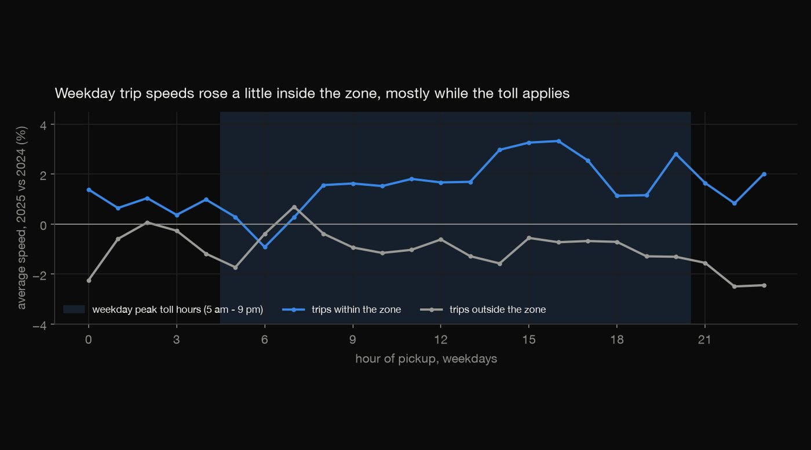
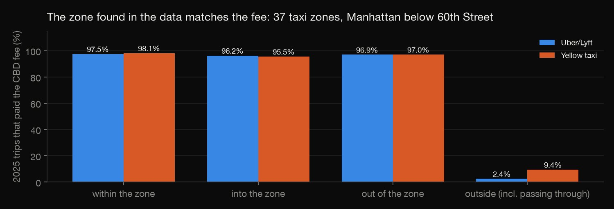
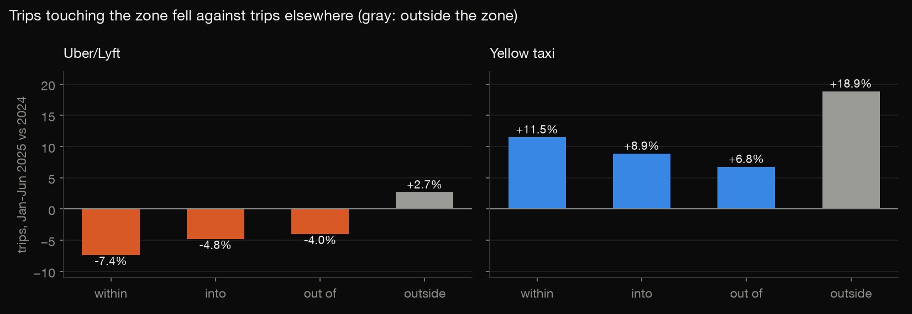
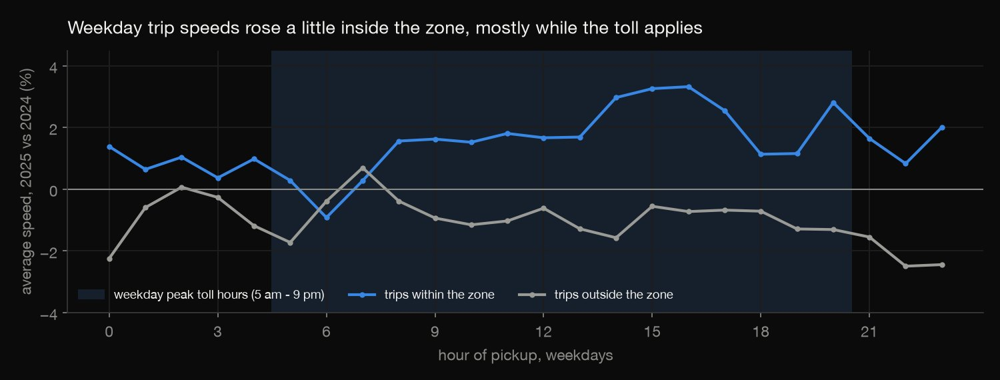
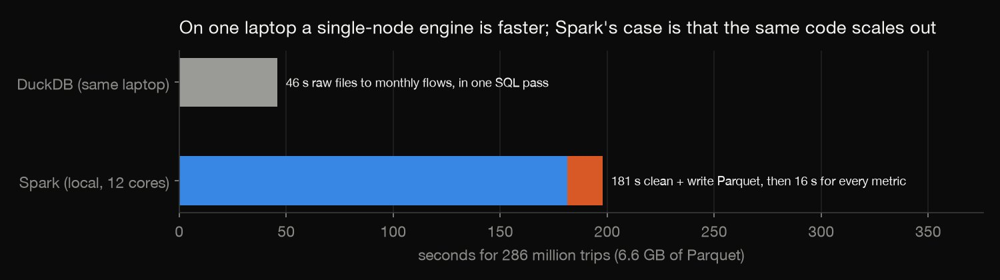
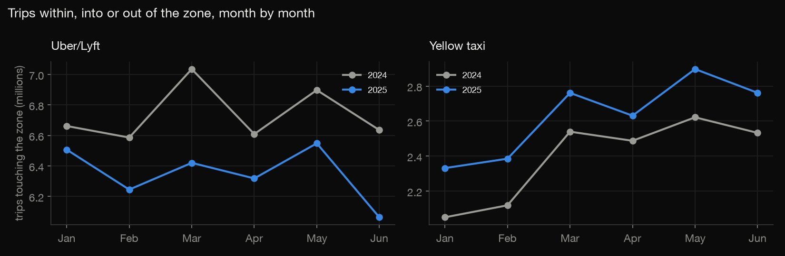

Apache Spark · Big data · 2026-10
NYC Congestion Pricing in Spark
Apache Spark over 286 million taxi and Uber/Lyft trips, January–June 2024 against 2025: did trips touching Manhattan's new congestion zone fall, and did they get faster? Every number is rebuilt in DuckDB to check.

Before-and-after is not cause: fares, the economy and app pricing also moved between the two years. Speed here is miles ÷ minutes of each trip, not measured traffic speed.
01 — The problem
On 5 January 2025 New York began charging vehicles that enter Manhattan below 60th Street, and every taxi and Uber/Lyft trip touching that zone now pays a fee. The city publishes every trip: about 24 million a month from these two services alone.
Did trips touching the zone fall? Did they get faster? And is the result solid enough to survive being rebuilt from scratch in another engine?
02 — What I built
A Spark pipeline over 24 monthly Parquet files (6.6 GB, 286,275,336 trips):
- Curation: two services' different columns become one schema. Impossible trips are dropped and counted by reason, and the result is written as Parquet partitioned by service, year and month.
- The zone, found in the data: the taxi zones where nearly every 2025 trip paid the new fee.
- Before and after: every trip classed as within, into, out of or outside the zone; monthly trips, speeds and fares; weekday speed by hour.
- A second engine: the whole pipeline rebuilt in DuckDB SQL, matching Spark to the trip.
03 — How it was built
- 01
Unify two services in Spark
Yellow taxis and app-based trips (Uber, Lyft) have different column names, and the 2025 files add a
cbd_congestion_feecolumn. Spark reads both with schema merging and maps them onto one schema.Each impossible trip is dropped for the first rule it breaks, and counted: pickup outside the file's month, zone unknown or outside NYC, no time or over 3 hours, no distance or over 100 miles, over 80 mph, negative fare. That leaves 272,950,020 trips (4.7% dropped). Along the way the counts show yellow-taxi negative fares rising from 289,313 to 1,198,424.
h = s.read.option("mergeSchema", "true").parquet(str(RAW / "fhvhv_tripdata_*.parquet")).select( - 02
Write it so later queries read less
The curated trips are written as Parquet partitioned by service, year and month. A query about 2025 then reads only the 2025 folders, and Spark's plan shows the pruning (
PartitionFilters: year = 2025). Repartitioning before the write gives one set of files per partition instead of hundreds of tiny ones. Curation takes 181 seconds; every metric after it takes 16..repartition("service", "year", "month") # one set of files per partition, not 200 tiny ones - 03
Find the congestion zone in the data
Rather than hand-typing a list, the zone is found from the fee itself. A taxi zone is inside if at least 90% of its own 2025 trips paid the fee. That gives 37 zones, all in Manhattan below 60th Street. The lookup table of zone names is tiny, so Spark broadcasts it to every task instead of shuffling 270 million rows.
The fee confirms the definition: 95.5–98.1% of trips within, into or out of these zones paid it, against 2.4–9.4% of trips classed as outside (mostly trips passing through).

cbd = same.where((F.col("share_paid") >= 0.9) & (F.col("intra_trips") >= 1000)).join(F.broadcast(zones), "zone") - 04
Compare before and after
Every trip becomes within, into, out of, or outside the zone, and each 2025 change is set against the change for trips outside it.
- Trips: Uber/Lyft trips within the zone fell 7.4% while trips elsewhere rose 2.7%. Yellow-taxi trips grew everywhere, but 7–12 points less where the zone was involved.
- Speed: trips within the zone got about 2.3% faster, while trips elsewhere slowed (−0.7% and −2.5%). On weekdays the gain sits mostly in the toll hours.


in_pu, in_do = F.col("pu").isin(*ids), F.col("do").isin(*ids) - 05
Rebuild it in another engine
check.pyignores Spark's output and runs the whole pipeline again in DuckDB SQL, from the 24 raw files. It applies the same rules, derives the same zone and computes the same flows. Every cleaning count, all 37 zones and all 96 monthly flows match: trip counts exactly, sums to one part in a billion.It also gives an honest comparison: DuckDB does it in 46 seconds on the same laptop. At this size one machine is enough. Spark's case is that the same code runs unchanged on a cluster when the data outgrows one machine.

WHEN miles / (minutes / 60) > 80 THEN 'faster than 80 mph'
04 — Results
| Jan–Jun, 2025 vs 2024 | Trips | Speed |
|---|---|---|
| Uber/Lyft, within | −7.4% | +2.3% |
| Uber/Lyft, outside | +2.7% | −0.7% |
| Yellow, within | +11.5% | +2.3% |
| Yellow, outside | +18.9% | −2.5% |
- Fewer trips touching the zone, relative to elsewhere: 6.7 to 10.0 points for Uber/Lyft and 7.4 to 12.1 points for yellow taxis.
- Slightly faster inside: trips within the zone gained 3.1 (Uber/Lyft) and 4.8 (yellow) points of speed against trips outside it.
- Checked twice: Spark and DuckDB agree on all 272,950,020 kept trips.

05 — What I'd do next
- Add a control city or a synthetic control, so the change can be separated from city-wide trends.
- Use the full year, and 2023, to check the 2024 baseline.
- Run the same job on a small cluster to measure how it scales.